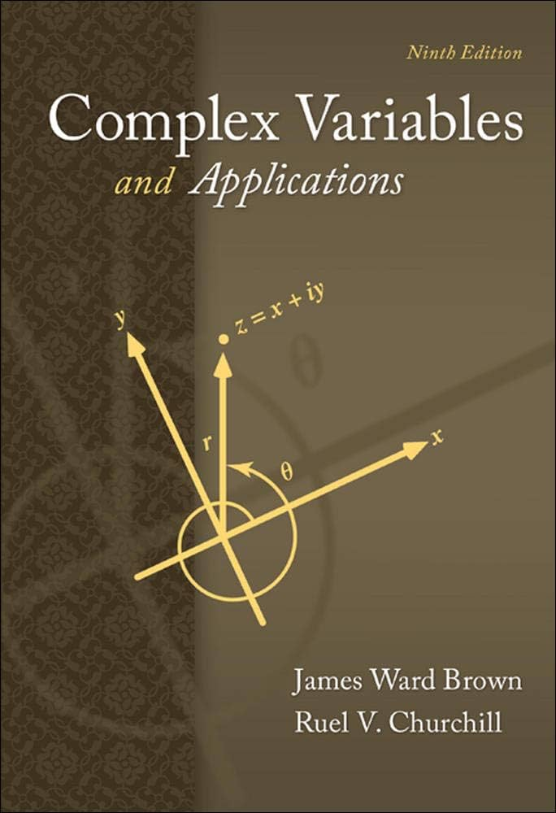
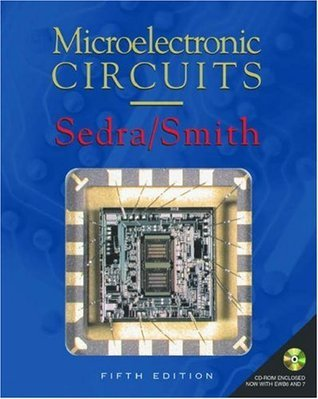
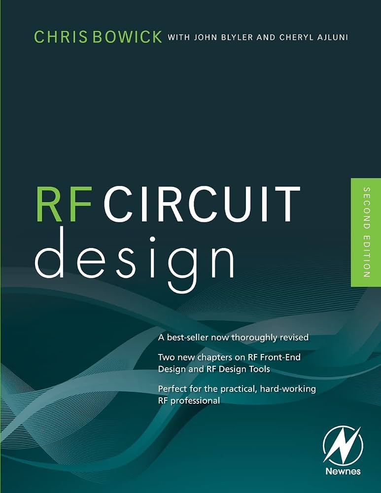

● ملخصات:
ملخص رنيم المغربي
● شروحات:
- وليد عيسى
- Tesla YU
● كتب:
1-Digital Design — M. Morris Mano, Michael D. Ciletti
2-Digital Systems: Principles and Applications — Ronald J. Tocci, Neal S. Widmer, Gregory L. Moss
3-Fundamentals of Digital Logic with Verilog Design — Stephen Brown, Zvonko Vranesic
● ملخصات:
ملخص تحليل وسيط
● شروحات:
- د.كامل فليفل 1
- د.كامل فليفل 2
● كتب:
1-Complex Variables and Applications — James Ward Brown, Ruel V. Churchill
2-Complex Analysis — Lars V. Ahlfors

● ملخصات:
● شروحات:
- ElCoM HU
- Ahmed Hamdy
● كتب:
1-Microelectronic Circuits — Adel S. Sedra, Kenneth C. Smith
2-Electronic Devices and Circuit Theory — Robert L. Boylestad, Louis Nashelsky

● ملخصات:
● شروحات:
- My Communication Academy
● كتب:
1-Microwave Engineering — David M. Pozar
2-Microwave Devices and Circuits — Samuel Y. Liao
● ملخصات:
ملخص دوائر الاتصالات
● شروحات:
-
● كتب:
1-RF Circuit Design — Christopher Bowick
2-Microwave and RF Design: A Systems Approach — Michael Steer
3-RF Microelectronics — Behzad Razavi
